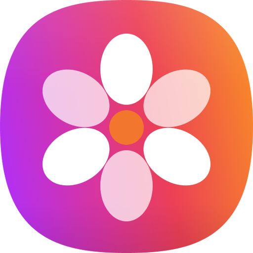

HOW IT WORKS
Weave는 어떻게 기억을 엮을까요?
찾은 기록이 다음 단서가 되어, 기억나지 않던 답까지 이어집니다.
필요한 정보가 채워질 때까지 반복
01
순간 감지Trigger
“지금, 도와줄 순간일까?”
검색창에 입력
기록 통합 검색
Weave 버튼
단서로 찾는 기억
대화·맥락 파악
먼저 건네는 기억
사용자가 직접 부르거나,
맥락 파악 후 조건을 감지합니다
맥락 파악 후 조건을 감지합니다
02
단서 정리Routing
“무엇을, 어디부터 찾을까?”
탐색 메모
찾을 것
와인 이름
아는 단서
지은
집들이
먼저 볼 곳
캘린더
+ 새 단서
3/15 18:00
다음에 무엇을 찾을지,
언제 멈출지 정합니다
언제 멈출지 정합니다
03
연쇄 탐색Multi-hop Search
“찾은 기록에, 다음 단서가 있을까?”
① 날짜 찾기
② 그 시간 사진
③ 라벨 읽기
캘린더
지은 집들이
3/15 18:00

3/15 20:14

사진 속 글자
추론 검색
시간 필터
OCR
같은 방식으로
약속 → 지금 위치
세 앱을 한 번에
찾은 단서가 다음 검색의 조건이 됩니다
04
전달Delivery
“골라서, 직접 완성해 볼까?”
자동 완성 추천
배비치 소비뇽 블랑
출처 · 캘린더, 갤러리
입력하기
sLLM이 상황에 맞는 모양으로
출처 카드
검색어·답장
추천 문장
출처와 함께 사용자에게 건넵니다
핵심 엔진 · 온디바이스 Reasoning Embedding
지금 단서로부터 ‘이어지는’ 기록을 찾는 경량 모델
00
사전 준비Indexing
“어디에 뭐가 있는지,
미리 정리해 둘까?”
미리 정리해 둘까?”
허용한 기록만 가져오기
사람·시간·장소와 사진 속 글자 정리
기억 색인
키워드 색인 · 정확한 이름
벡터 색인 · 비슷한 의미
바뀐 기록만 갱신
충전·유휴 시간에
기기 밖으로 보내지 않음